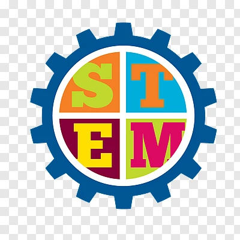
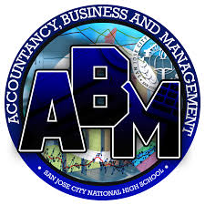
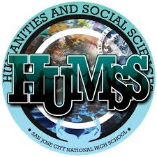
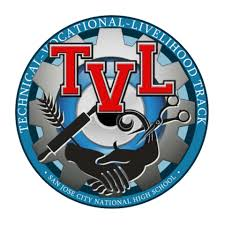

Science, Technology, Engineering, and Mathematics
The STEM (Science, Technology, Engineering, and Mathematics) strand in our Academic Track is tailored for students passionate about science and technology. This program prepares them for future careers in fields such as engineering, computer science, biology, and physics.

Accountancy, Business & Management (ABM)
The ABM (Accounting and Business Management) strand in our Academic Track is tailored for students interested in the world of finance, business, and management. Ideal for those aspiring to pursue careers in accounting, business administration, or management, the ABM strand provides a solid foundation for success in the dynamic world of commerce.

Humanities & Social Sciences (HUMSS)
The HUMSS (Humanities and Social Sciences) strand in our Academic Track is tailored for students who love literature, social studies, and the arts. This program fosters critical thinking through engaging coursework in history, psychology, and literature. Ideal for those passionate about journalism, education, or the arts.
General Academic Strand
The GAS (General Academic Strand) strand in our Academic Track offers a flexible and well-rounded educational experience for students exploring diverse fields. It provides a comprehensive foundation for those who have not yet decided on a specific career path, offering a broad range of knowledge and skills applicable to various fields of study in higher education.

Technical-Vocational-Livelihood (TVL)
The TVL Track in our academic program is designed for students with a practical and hands-on approach to learning. This track prepares students for various technical, vocational, and livelihood opportunities. Within the TVL Track, students can specialize in areas such as Home Economics, delving into practical life skills; ICT (Information and Communication Techn